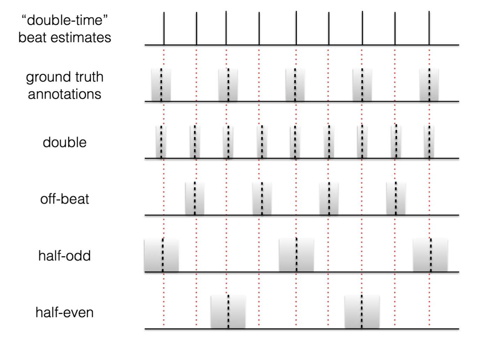
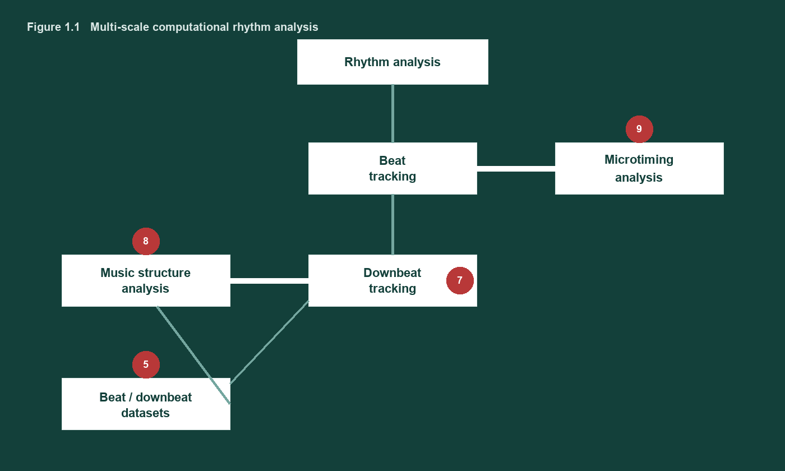
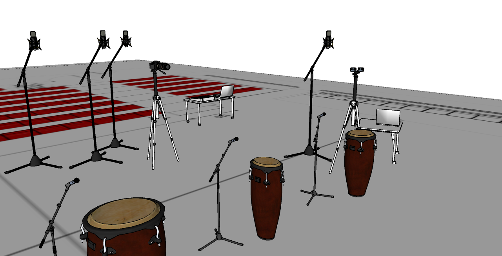
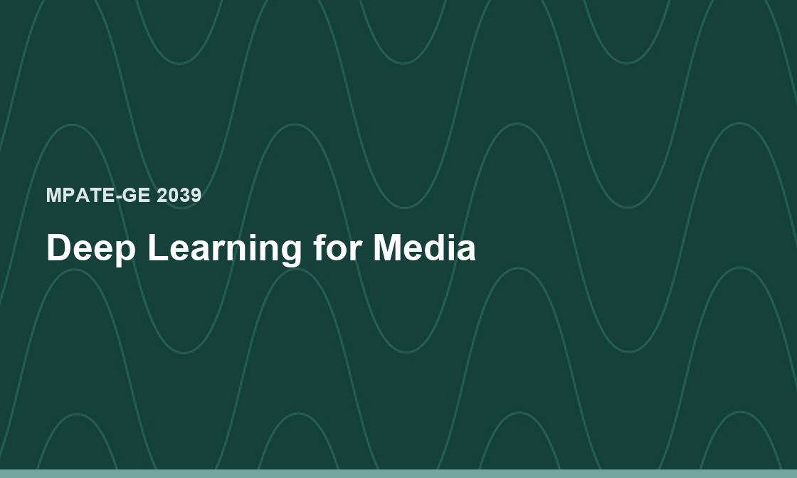
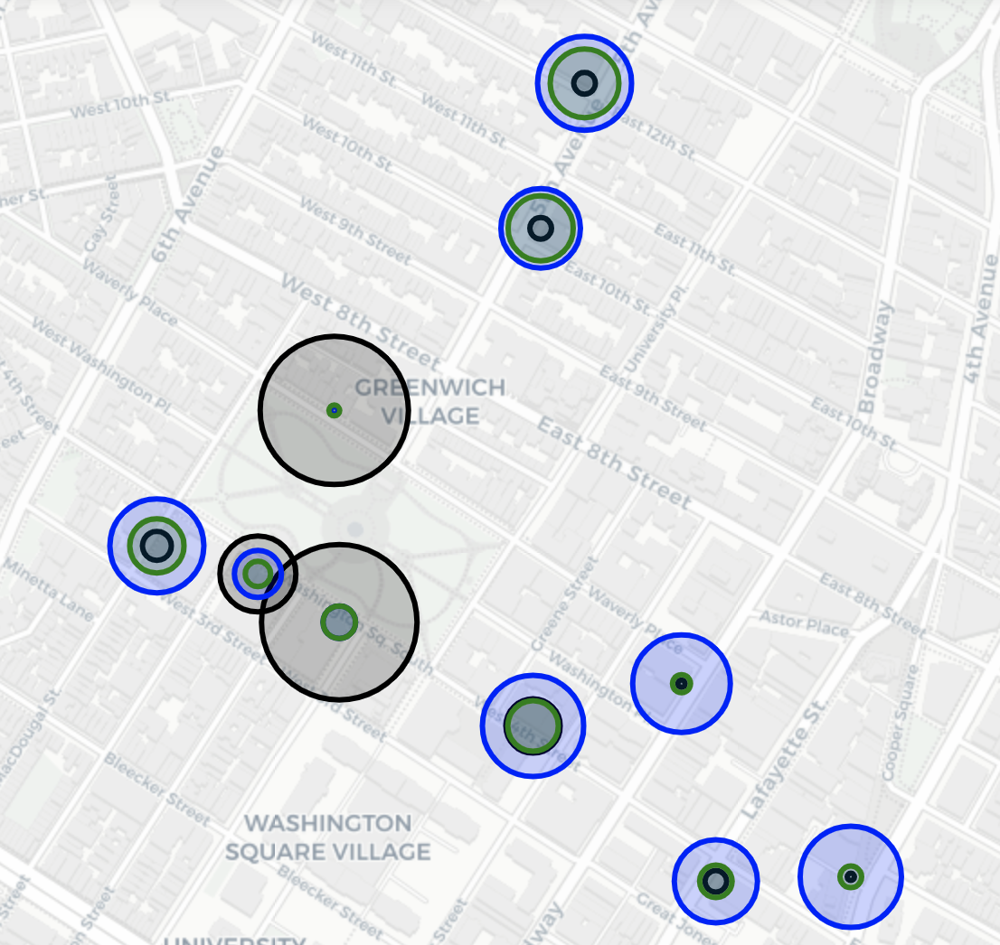
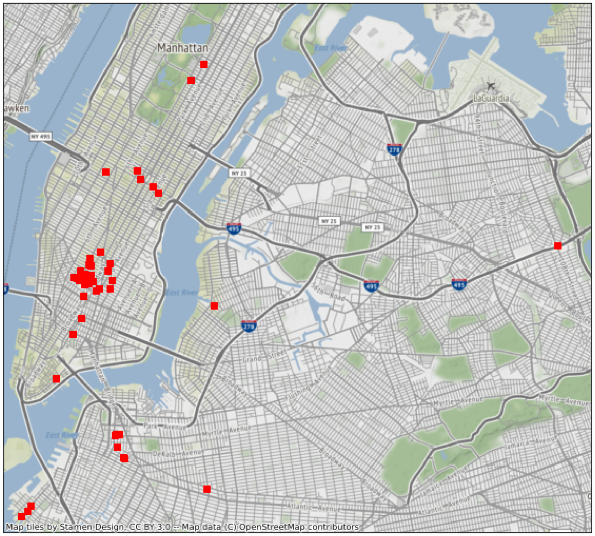
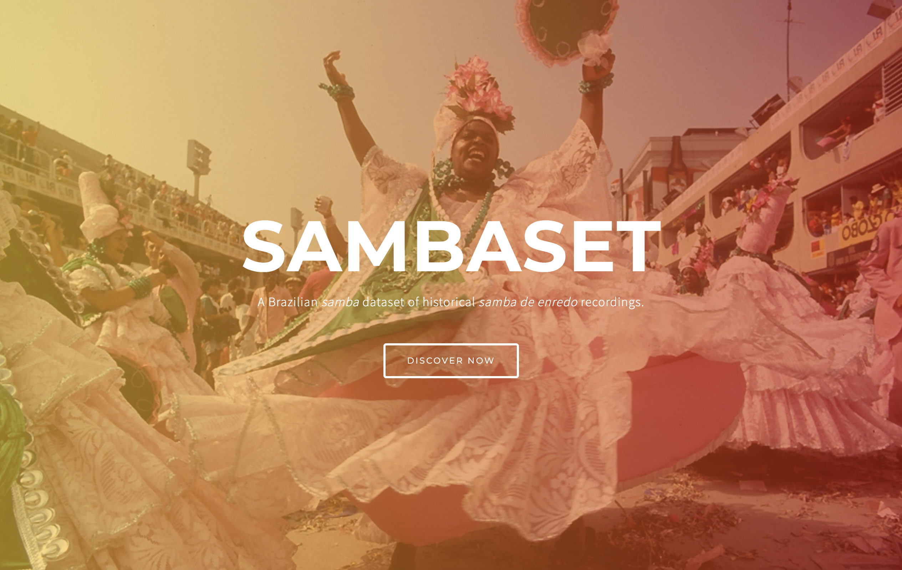
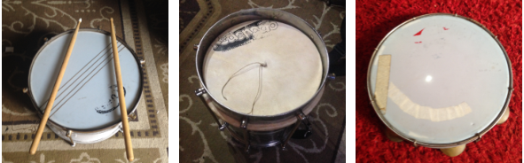

Resources
Tutorials
Theses

Multi-scale computational rhythm analysis: a framework for sections, downbeats, beats, and microtiming
Magdalena Fuentes
Ph.D. thesis, Université Paris-Saclay, 2019

Procesamiento multimodal de señales en la interpretación de música
Bernardo Marenco, Magdalena Fuentes, Florencia Lanzaro
B.Eng. thesis, Universidad de la República, 2015
Courses

Datasets

Urbansas
Audiovisual spatial urban scene understanding

MONYC
Music of New York City Dataset

SONYC-UST 2.1
Multilabel urban acoustic sensor network

SAMBASET
Historical samba de enredo recordings

BRID
Brazilian rhythmic instruments

AUCD
Afro-Uruguayan Candombe